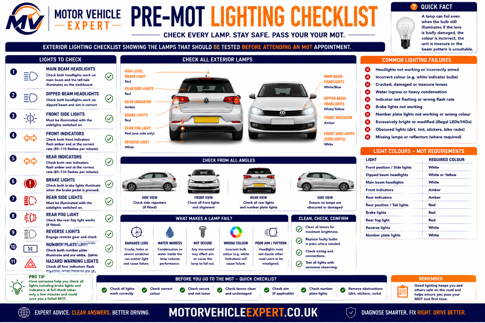
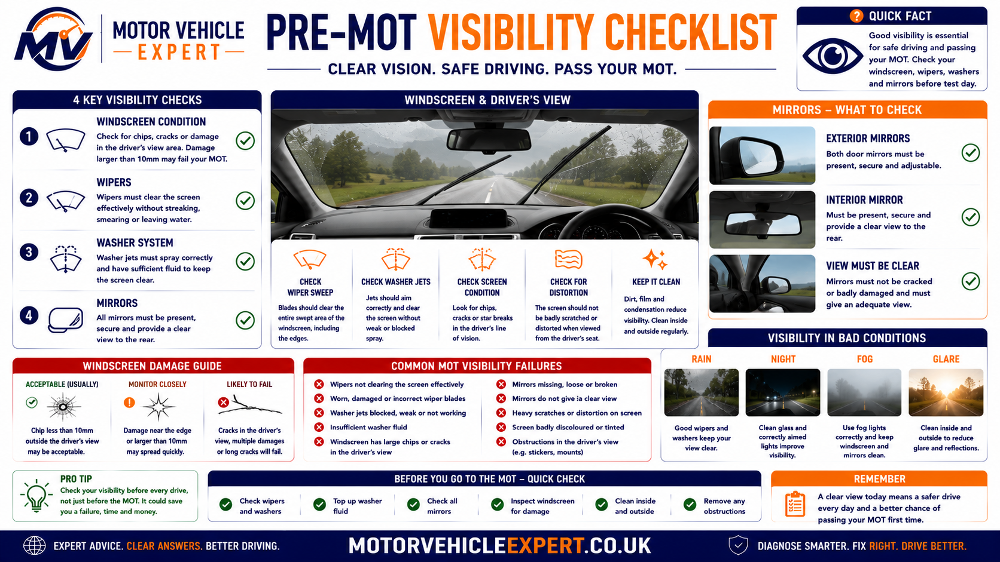
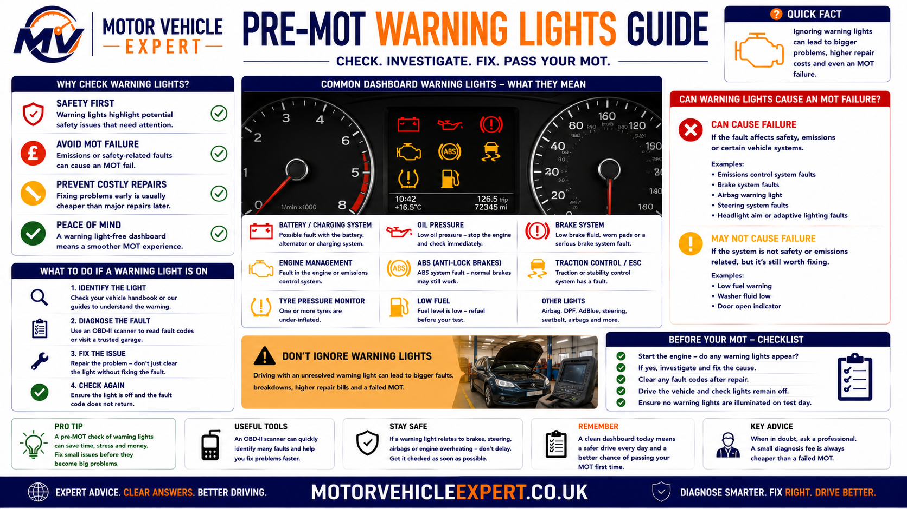
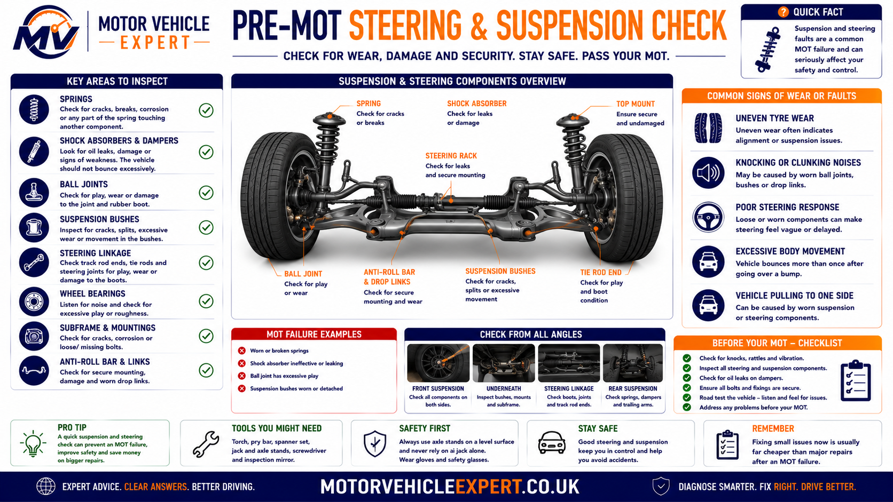
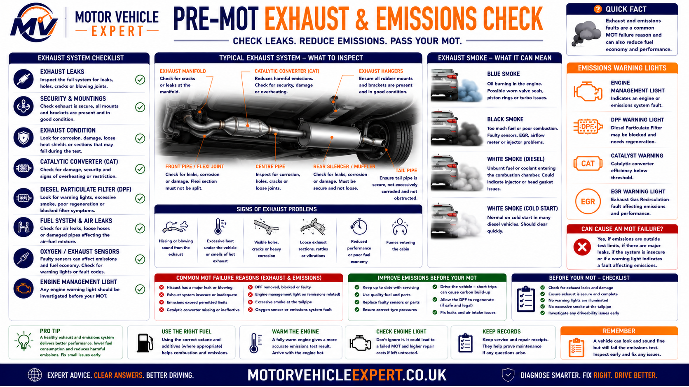

How Do You Prepare for an MOT Test?
Preparing your vehicle before an MOT gives you the opportunity to identify simple faults that commonly cause avoidable failures. Spending 20–30 minutes checking the condition of your tyres, lights, brakes, wipers, washers, mirrors, number plates and dashboard warning lights can significantly improve the chances of passing first time while also making your vehicle safer to drive.
An MOT is not a vehicle service and the tester cannot repair faults during the inspection. Carrying out a structured pre-MOT inspection allows you to correct simple defects before they become MOT failures and gives you time to arrange repairs where necessary.
Time Required
Most owner checks can be completed in around half an hour using only basic hand tools or no tools at all.
Skill Level
Most inspections involve simple visual checks that any vehicle owner can perform safely at home.
Main Objective
Identify inexpensive faults before they become MOT failures or larger repair bills.
The majority of first-time MOT failures involve faults that owners can often discover themselves, including blown bulbs, worn tyres, damaged wiper blades, empty washer bottles, unreadable number plates and warning lights that have been ignored.
Why Preparing Before an MOT Is Worthwhile
An MOT only confirms whether your vehicle meets the minimum legal roadworthiness standard on the day of testing. Spending a short amount of time inspecting the vehicle beforehand often prevents unnecessary failures and helps identify developing mechanical problems before they become expensive repairs.
1. Identify Simple Faults
Replace failed bulbs, damaged wiper blades and other inexpensive items before the inspection.
2. Arrange Repairs
If more serious faults are found, you have time to book repairs before your MOT appointment.
3. Improve Safety
Brakes, tyres and steering faults affect safety every day, not just during an MOT.
4. Reduce Retests
Fixing faults beforehand helps reduce the chance of needing another MOT appointment.
Complete Pre-MOT Checklist
Work through each area below a few days before your MOT appointment. If you discover anything that could affect road safety or cause an MOT failure, arrange repairs before attending the test centre.
Carry out these checks several days before the MOT rather than on the morning of the inspection. This gives you enough time to obtain replacement parts or arrange professional repairs if required.
Tyres
- Minimum 1.6 mm tread depth
- No cuts or bulges
- No exposed cords
- Correct tyre pressures
- Even wear across tread
Brakes
- Firm brake pedal
- No grinding noises
- No brake warning lights
- Vehicle stops straight
- Handbrake operates correctly
Lights
- Headlights
- Brake lights
- Indicators
- Rear lamps
- Number plate lamps
Visibility
- Clean windscreen
- Good wiper blades
- Screenwash topped up
- Mirrors secure
- No serious cracks
Dashboard
- ABS light off
- Airbag light off
- Brake warning light off
- Engine warning light investigated
- TPMS operating correctly
Vehicle Exterior
- Number plates readable
- Doors open correctly
- Fuel cap fitted
- Bonnet secure
- No dangerous damage

Tyres remain one of the UK's most common MOT failure items, making them one of the highest priorities during any pre-test inspection.
If your vehicle has serious brake problems, severe tyre damage, heavy steering play, excessive exhaust smoke or illuminated brake warning lights, arrange repairs before continuing to drive normally.
Check Your Tyres and Wheels Before the MOT
Tyres are among the most common causes of MOT failure because their condition directly affects braking distance, steering control and grip in wet weather. Every tyre fitted to the vehicle must have sufficient tread, remain free from dangerous structural damage and be suitable for the wheel and vehicle.
A tyre may look acceptable from the outside while the inner shoulder is badly worn. For this reason, inspect the full width of each tyre rather than checking only the most visible outer edge. Turn the front wheels fully left and right so the inner tread and sidewalls can be examined properly.
Tread Depth
The legal minimum tread depth is measured across the central three-quarters of the tyre around its complete circumference.
At least 1.6 mmStructural Condition
Check for exposed cords, deep cuts, bulges, tread separation and serious cracking in the sidewall or tread area.
No Dangerous DamageTyre Pressure
Inflate each tyre to the vehicle manufacturer's recommended pressure when the tyres are cold.
Use Vehicle Specification
Inspect all four tyres carefully and do not assume that a tyre is safe simply because the outer edge looks acceptable. Inner-edge wear can remain hidden until the steering is turned or the vehicle is raised.
Tyre Checks You Can Perform at Home
- Measure tread depth at several points.
- Inspect the inner and outer tyre shoulders.
- Look for cuts, cracking and sidewall bulges.
- Check for nails or other embedded objects.
- Confirm that no cords or internal structure are visible.
- Set tyre pressures to the correct specification.
- Check that valve stems are not damaged.
- Make sure the tyres are suitable for the vehicle and axle.
Signs of a Wider Vehicle Problem
- Wear on one edge may indicate poor wheel alignment.
- Cupped wear may suggest worn suspension components.
- Repeated pressure loss may indicate a puncture or rim leak.
- Steering vibration may indicate wheel or tyre damage.
- Different wear rates may point to incorrect pressures.
- Cracking may indicate age-related tyre deterioration.
- A bulge usually indicates internal structural damage.
- Uneven axle wear may affect braking and stability.
A tyre with exposed cords, a sidewall bulge, serious separation or severe damage should not be treated as an MOT-only issue. These faults can make the tyre unsafe during normal driving and may require immediate replacement.
Inspect Your Brakes Before the MOT
The braking system is one of the most important safety areas examined during an MOT. The tester assesses braking efficiency, balance between wheels, parking-brake performance and the visible condition of components such as discs, pads, pipes, hoses and hydraulic parts.
Drivers cannot reproduce the full roller brake test at home, but many warning signs can still be identified before the appointment. Pay attention to pedal feel, stopping behaviour, brake noise, warning lights and any evidence of fluid leakage.
On a suitable road and at a safe speed, the vehicle should brake smoothly without pulling sharply to one side, producing severe vibration or requiring excessive pedal travel. Do not perform aggressive brake tests on public roads.

Brake condition should be assessed as a complete system. A noise may originate from worn pads, but poor braking can also result from seized calipers, corroded discs, damaged hoses, leaking hydraulics or contaminated fluid.
Brake Pads
Listen for grinding and inspect the remaining friction material where it can be seen safely through the wheel.
No Metal-to-Metal ContactBrake Discs
Look for severe scoring, heavy corrosion, cracking or an obvious wear lip around the outer edge.
Must Remain ServiceableBrake Fluid
The reservoir level should remain between the minimum and maximum markings without evidence of leakage.
No Visible Fluid LossWarning Signs Before the MOT
- Grinding or scraping while braking.
- A soft, spongy or sinking brake pedal.
- The vehicle pulling to one side.
- Steering-wheel vibration under braking.
- A brake or ABS warning light staying illuminated.
- A burning smell after normal braking.
- Poor parking-brake performance.
- Brake-fluid level continuing to fall.
Brake Areas Assessed During the MOT
- Brake pedal condition and operation.
- Brake servo assistance where applicable.
- Hydraulic pipes and flexible hoses.
- Visible brake-fluid leaks.
- Brake discs, drums and friction components.
- Calipers and wheel cylinders where visible.
- Parking-brake efficiency.
- Service-brake efficiency and balance.
Do not continue normal driving if the brake pedal sinks towards the floor, brake fluid is leaking, the vehicle pulls violently under braking or braking performance has suddenly deteriorated. These symptoms may indicate a dangerous hydraulic or mechanical fault.
Check Every Exterior Light Before the MOT
Faulty lights are one of the easiest MOT failures to prevent. A failed bulb, damaged lamp unit, incorrect colour or badly adjusted headlamp can cause a vehicle to fail even when the rest of the car is in good mechanical condition.
Test every lighting function individually and inspect the vehicle from the outside. Ask another person to operate the brake pedal while you confirm that the rear brake lights and high-level brake light illuminate correctly.
Headlights
Check dipped beam, main beam, correct operation and obvious damage to the lens or housing.
Both Sides OperationalIndicators
Confirm that every indicator flashes at a normal rate and displays the correct colour.
Correct Amber OutputBrake Lights
Check both rear brake lamps and the centre high-level lamp where one is fitted.
All Required Lamps WorkingRear Position Lamps
Check tail lamps, side lights and the visible condition of the lamp units.
Clearly VisibleFog Lamps
Test required rear fog lamps and confirm the dashboard warning indicator operates.
Correct OperationNumber Plate Lamps
Confirm that the rear registration plate is illuminated and remains clearly readable.
Plate Must Be Illuminated
A lamp can fail even when the bulb still illuminates if the lens is badly damaged, the colour is incorrect, the unit is insecure or the beam pattern is unsuitable.
Complete Lighting Walkaround
- Switch on the front and rear position lamps.
- Test dipped and main-beam headlights.
- Check every direction indicator.
- Operate the hazard-warning lights.
- Check the rear brake lamps with assistance.
- Test the rear fog lamp and warning indicator.
- Check number plate illumination.
- Inspect lamp lenses for damage or condensation.
Common Lighting Problems
- Blown or intermittent bulbs.
- Corroded bulb holders or connectors.
- Cloudy headlamp lenses.
- Incorrect replacement bulb colour.
- Damaged or insecure lamp housings.
- Rapid indicator flashing.
- Water entering a lamp unit.
- Incorrect headlamp alignment.
Clean the lamp lenses before the MOT. Dirt does not repair a failed bulb or damaged unit, but clean lenses make it easier to identify cracks, condensation and weak light output during your own inspection.
Inspect the Windscreen, Wipers, Washers and Mirrors
The driver must have a clear view of the road. MOT testers inspect the windscreen, wiper system, washer operation and required mirrors because poor visibility can make a vehicle unsafe even when its mechanical systems are otherwise operating correctly.
Check the complete swept area of the windscreen, not just the glass directly in front of your face. Wiper blades must clear the screen effectively without leaving heavy streaks, and the washer system must deliver enough fluid to help remove dirt.
Windscreen
Look for cracks, chips, scratches, stickers or damage that interferes with the driver's view.
Clear Field of VisionWiper Blades
Blades should remain securely attached and clear the glass without splitting, smearing or missing large areas.
Effective Screen ClearingWasher System
Fill the washer reservoir and check that the jets deliver sufficient fluid to the windscreen.
Operational and Filled
Small windscreen chips can become larger cracks, particularly during cold weather or after sudden temperature changes. Repairing minor damage early may prevent the need for full windscreen replacement.
Checks to Complete Before Test Day
- Clean the inside and outside of the windscreen.
- Check the glass within the driver's viewing area.
- Remove items obstructing the view where appropriate.
- Inspect both wiper blades for splits or detachment.
- Confirm the wipers sweep correctly.
- Fill the washer-fluid reservoir.
- Clear blocked washer jets carefully.
- Check that required mirrors remain secure.
Problems That Need Attention
- Cracks spreading across the windscreen.
- Damage directly affecting the driver's view.
- Wipers leaving large uncleared areas.
- Detached or severely split wiper rubber.
- Washer pump failing to operate.
- Blocked or badly misdirected washer jets.
- A loose or missing required mirror.
- Heavy scratches that impair visibility.
Where rear visibility equipment is fitted and required, check the rear wiper, washer and heated-window operation as part of the vehicle's general preparation. Even where a particular item is not directly assessed, clear all-round visibility improves safety on the journey to and from the test centre.
Check Dashboard Warning Lights Before the MOT
Modern vehicles continuously monitor dozens of safety and emissions systems using electronic control units (ECUs), sensors and diagnostic software. Many dashboard warning lights are now included within the MOT inspection because they indicate faults that could affect road safety or emissions compliance.
A warning light that remains illuminated after the engine has started usually indicates that the vehicle has detected a fault. Simply clearing a warning light without repairing the underlying problem is unlikely to solve the issue because most faults will return once the system completes another self-test.
ABS Warning Light
The Anti-lock Braking System warning lamp should illuminate briefly during start-up before going out.
Must Not Stay OnAirbag / SRS
Supplemental Restraint System faults may affect airbag deployment during a collision.
Self-Test RequiredEngine Management
An engine warning light often indicates an emissions-related or engine control fault that should be diagnosed before the MOT.
Investigate PromptlyBrake Warning
This may indicate low brake fluid, hydraulic faults or parking brake issues depending on the vehicle.
Safety PriorityTPMS
Vehicles fitted with a Tyre Pressure Monitoring System may fail if the system is defective or displaying a fault.
System OperationalESC / Stability Control
Stability control warning lights indicate faults affecting vehicle stability and traction systems.
No Active Faults
Not every illuminated warning light automatically results in an MOT failure, but any safety or emissions-related warning should always be investigated before your appointment.
If a warning light appears shortly before your MOT, avoid simply resetting the fault code. Read the diagnostic information, repair the underlying problem and confirm the system completes its self-test correctly before the inspection.
Inspect Number Plates Before the MOT
Registration plates are one of the quickest items to inspect but remain a surprisingly common cause of avoidable MOT failures. Plates must be securely fitted, clearly legible and comply with current UK requirements regarding condition, spacing and visibility.
Checks to Perform
- Clean front and rear plates.
- Ensure every character is readable.
- Replace cracked or badly faded plates.
- Check plate illumination.
- Confirm plates remain securely attached.
- Remove dirt that obscures characters.
Common Problems
- Cracked acrylic.
- Peeling reflective backing.
- Missing fixings.
- Incorrect spacing.
- Characters difficult to read.
- Dirty or damaged number plate lamps.
Interior Safety Checks Before the MOT
Several important safety items are assessed inside the vehicle. Seatbelts, seats, steering controls, mirrors and the driver's view all contribute to safe operation and should be inspected before attending the MOT.
Seatbelts
Check every belt retracts correctly, latches securely and shows no cuts or fraying.
Driver's Seat
Ensure the seat remains securely mounted and locks correctly in the selected position.
Horn
Confirm the horn produces a clear continuous sound without intermittent operation.
Mirrors
Interior and exterior mirrors should remain secure and provide an adequate field of vision.
Steering Wheel
Check for excessive free play or unusual noises while turning the wheel.
Dashboard
Confirm all gauges operate normally and no safety-related warnings remain illuminated.
Inspect Steering and Suspension Components
Steering and suspension defects often develop gradually, making them easy to ignore until they become serious enough to affect handling or cause an MOT failure. Excessive movement, worn joints, damaged springs, leaking dampers and deteriorated bushes all reduce vehicle stability.

Uneven tyre wear, knocking noises, poor steering response and excessive body movement often indicate suspension or steering faults that should be inspected before the MOT.
Symptoms to Investigate
- Vehicle pulling while driving.
- Steering vibration.
- Knocking over bumps.
- Excessive body roll.
- Uneven tyre wear.
- Steering free play.
Items Checked During the MOT
- Road springs.
- Shock absorbers.
- Ball joints.
- Steering rack.
- Track rod ends.
- Suspension bushes.
Check the Exhaust and Emissions System Before the MOT
The exhaust system must control engine noise, direct exhaust gases safely away from the passenger compartment and support the vehicle’s emissions-control equipment. During the MOT, the tester checks the visible condition of the exhaust and performs the appropriate emissions test for the vehicle’s fuel type, age and specification.
Exhaust faults are not always obvious from the driver’s seat. A small leak may initially produce only a faint ticking sound, while a deteriorated mounting can allow the system to move or strike the underside of the vehicle. Unusual smoke, warning lights, strong fumes and excessive noise should all be investigated before the test.
Leaks and Corrosion
Listen for blowing, hissing or ticking noises and inspect accessible sections for holes, fractures and heavy corrosion.
No Serious LeakageEngine Management
An illuminated engine warning light may indicate a fault affecting combustion, fuel control or emissions equipment.
Diagnose Before TestingDPF and Smoke
Excessive smoke, a damaged particulate filter or evidence that required emissions equipment has been removed can cause serious problems.
No Abnormal Smoke
A vehicle may run and drive while still producing emissions outside the permitted limits. Poor combustion, sensor faults, air leaks, injector problems, catalytic-converter deterioration and diesel particulate filter faults can all affect the test result.
Exhaust Checks You Can Perform
- Start the engine and listen for blowing or hissing noises.
- Check whether the exhaust appears lower than normal.
- Listen for knocking beneath the vehicle over bumps.
- Look for loose or damaged exhaust mountings.
- Check for strong fumes entering the cabin.
- Observe the exhaust for persistent abnormal smoke.
- Check whether an emissions warning light remains illuminated.
- Arrange diagnosis if the engine runs roughly or misfires.
Symptoms Requiring Investigation
- A much louder exhaust note than normal.
- Metallic rattling from beneath the vehicle.
- Black smoke during ordinary driving.
- Persistent blue exhaust smoke.
- Dense white smoke after the engine is warm.
- A strong fuel smell from the exhaust.
- Loss of power or repeated limp mode.
- Evidence of emissions equipment being modified or removed.
Do not ignore exhaust fumes inside the passenger compartment. A leaking exhaust can allow harmful gases to enter the vehicle and should be inspected urgently rather than left until the MOT appointment.
Look for Fluid Leaks Before the MOT
A small amount of condensation beneath a vehicle can be normal, particularly after using the air conditioning. However, persistent oil, fuel, coolant, brake-fluid, power-steering-fluid or transmission-fluid leakage may indicate a developing mechanical fault and can affect the MOT where the leak is sufficiently serious.
Check the vehicle after it has been parked overnight on a clean, level surface. Note the position, colour, smell and approximate quantity of any fluid found beneath it. This information can help a garage identify the likely system before carrying out a closer inspection.
Engine Oil
Usually brown or black, depending on age and condition. Common leak points include seals, gaskets, filters and sump components.
Check Level and SourceEngine Coolant
Coolant may appear pink, red, blue, green or orange depending on the specification used in the vehicle.
Do Not Ignore LossBrake Fluid
Brake fluid is usually pale yellow to brown and may feel slippery. Any suspected brake-fluid leak requires urgent attention.
Immediate InspectionPetrol or Diesel
Fuel leakage may be identified by a strong smell, wet pipework or staining beneath the vehicle.
Urgent Safety FaultPower-Steering Fluid
Hydraulic steering fluid may appear red, amber or brown and can leak from hoses, unions, pumps or steering racks.
Check Steering OperationAir-Conditioning Water
Clear, odourless water beneath the passenger area after air-conditioning use is normally condensation rather than a mechanical leak.
Usually No Repair NeededCheck engine oil and other accessible fluid levels using the manufacturer’s instructions. Never remove a pressurised coolant cap while the engine is hot, and do not work beneath a vehicle supported only by a jack.
| Fluid | Typical Appearance | Likely Area | Recommended Action |
|---|---|---|---|
| Engine oil | Brown to black | Engine, sump or oil filter area | Check level and arrange leak diagnosis |
| Coolant | Coloured and slightly sweet-smelling | Radiator, hoses, water pump or engine | Avoid overheating and investigate promptly |
| Brake fluid | Pale yellow to brown | Wheels, brake pipes or engine bay | Treat as an urgent safety issue |
| Fuel | Clear to pale amber with a strong smell | Tank, pipes, injectors or engine bay | Stop and arrange urgent professional help |
| Transmission fluid | Red, amber or dark brown | Gearbox or transmission cooler area | Check level where applicable and diagnose |
| Condensation | Clear and odourless | Below the air-conditioning drain | Usually normal after air-conditioning use |
Review Previous MOT Advisories Before the Next Test
Previous MOT advisories are one of the most useful sources of information when preparing a vehicle for its next inspection. An advisory records a defect that was not serious enough to fail at the time but could deteriorate and become a failure later.
Do not assume that an advisory disappeared simply because the vehicle continued to drive normally. Tyre wear, brake deterioration, suspension play, corrosion, fluid seepage and exhaust damage often worsen gradually between annual tests.
Read the Previous Record
Review the most recent MOT result and note every advisory, minor defect and repaired failure.
Confirm What Was Repaired
Check invoices and service records rather than assuming previous advisory work was completed.
Inspect Repeated Problems
Give particular attention to defects that have appeared across more than one MOT record.
Advisories That Often Become Failures
- Tyres approaching the legal tread limit.
- Brake pads becoming thin.
- Brake discs showing wear or corrosion.
- Suspension joints developing movement.
- Shock absorbers beginning to leak.
- Exhaust components becoming corroded.
- Brake pipes showing surface corrosion.
- Oil leaks becoming progressively worse.
Warning Signs in the MOT History
- The same advisory appears year after year.
- Several safety-related advisories appear together.
- Repairs are claimed but no invoices are available.
- Tyre advisories move between different wheels.
- Corrosion wording becomes more severe over time.
- Mileage changes appear inconsistent.
- The vehicle repeatedly fails before passing later.
- Maintenance appears limited to MOT test preparation.
A vehicle can pass its MOT while still having defects that require monitoring or repair. Treat advisories as early maintenance warnings rather than optional comments that can automatically be ignored for another year.
Book the MOT at the Right Time
Good preparation includes choosing an appointment date that leaves enough time to complete repairs without risking the expiry of the current MOT. Booking too late can place unnecessary pressure on the owner, particularly where parts need to be ordered or a specialist repair is required.
You can usually present a vehicle for an MOT up to one month minus one day before the existing certificate expires and preserve the original renewal date. Check the current expiry date carefully before arranging the appointment.
Book Early
Arrange the test before the final few days of the certificate so unexpected repairs can be completed without panic.
Allow Repair TimePrepare Access
Make sure the boot, doors, bonnet, fuel flap and other accessible areas are not obstructed unnecessarily.
Vehicle Ready to InspectWarm the Vehicle
A normal drive before the appointment can help the engine and emissions-control systems reach operating temperature.
Avoid Arriving Stone ColdThe Day Before the MOT
- Repeat the exterior lighting check.
- Confirm tyre pressures and condition.
- Fill the washer bottle.
- Check the fuel level is sufficient.
- Remove unnecessary items obstructing access.
- Check warning lights during engine start-up.
- Locate any wheel-locking key for possible repair work.
- Confirm the appointment time and test-centre location.
Immediately Before Leaving
- Walk around the vehicle once more.
- Check that no bulb has failed overnight.
- Look beneath the vehicle for fresh fluid leakage.
- Confirm all doors and the bonnet close securely.
- Remove frost, snow or heavy dirt from the glass.
- Ensure both registration plates remain readable.
- Listen for new brake or exhaust noises.
- Take relevant repair or maintenance information.
A bulb may be replaced quickly, but tyres, brakes, suspension components and exhaust parts may require workshop time. Completing the main inspection several days beforehand gives you a realistic opportunity to correct anything you discover.
Common Mistakes Drivers Make Before an MOT
Most preparation mistakes happen because drivers concentrate on the appearance of the vehicle rather than its safety systems. Cleaning the car is useful, but it cannot compensate for a failed bulb, damaged tyre, ineffective brake, warning light or empty washer bottle.
Only Checking the Obvious Tyre Edge
Serious wear may be hidden on the inner shoulder where it cannot be seen during a quick walkaround.
Ignoring Warning Lights
Safety and emissions warning lights should be diagnosed rather than covered, reset or left until test day.
Forgetting the Washer Bottle
A screenwasher system that cannot deliver fluid can cause an avoidable failure.
Assuming a Service Includes an MOT
A service and an MOT serve different purposes unless the garage has specifically booked and completed both.
Clearing Codes Without Repairing Faults
Warning lights and fault codes commonly return once the vehicle repeats its system checks.
Booking on the Expiry Date
A last-minute appointment leaves little time to arrange repairs if the vehicle fails.
Ignoring Previous Advisories
Components described as worn or corroded last year may now have deteriorated beyond the permitted limit.
Testing Unsafe Brakes on the Road
Serious braking symptoms require professional inspection, not increasingly aggressive road testing.
Thinking an MOT Is a Full Health Check
The MOT checks defined legal requirements but does not confirm that every mechanical component is in excellent condition.
The best pre-MOT inspection improves the vehicle even before the official test begins. Repairing tyres, brakes, lights, visibility faults and fluid leaks protects the driver, passengers and other road users regardless of the final result.
Typical Pre-MOT Repair Costs in the UK
Many common MOT faults are relatively inexpensive when identified early. However, costs can rise substantially where worn components have damaged surrounding parts or where several defects need attention at the same time.
The estimates below are broad UK guide prices rather than quotations. Vehicle design, parts quality, labour rates, regional pricing and the extent of the fault all affect the final amount charged.
Replacement Bulb
Basic exterior bulb replacement where access is straightforward.
£10–£60Wiper Blades
Replacement front wiper blades supplied and fitted.
£20–£70One Replacement Tyre
Cost varies significantly with tyre size, rating and brand.
£70–£220+Brake Pad Replacement
Replacement pads on one axle where discs and calipers remain serviceable.
£100–£250Brake Discs and Pads
Replacement discs and pads on one axle.
£220–£550+Windscreen Repair
Minor chip repair where the damage remains suitable for repair.
£40–£90Shock Absorber
Replacement cost depends on axle, vehicle type and whether paired replacement is required.
£180–£500+Exhaust Section
Replacement of a damaged rear or centre exhaust section.
£150–£450+Warning-Light Diagnosis
Initial diagnostic investigation before parts or repairs are added.
£50–£120+Pre-MOT Repair Cost Planning
Use the comparison below to understand which common faults can often be resolved quickly and which may require more time, investigation or workshop labour.
| Repair | Typical UK Cost | Usually Needed When | Preparation Priority |
|---|---|---|---|
| Exterior bulb | £10–£60 | A required lamp has failed or operates intermittently | High and usually quick |
| Wiper blades | £20–£70 | The blades smear, split or fail to clear the screen | High and easy to prevent |
| Number plate | £25–£60 per plate | The plate is cracked, faded, delaminated or unreadable | High and straightforward |
| One tyre | £70–£220+ | Tread is below or close to the limit, or damage is present | Safety critical |
| Brake pads | £100–£250 | Friction material is worn or braking noise has developed | Safety critical |
| Brake discs and pads | £220–£550+ | Discs are worn, damaged, heavily corroded or scored | Safety critical |
| Suspension component | £120–£500+ | A joint, bush, spring or damper has excessive wear or damage | Allow workshop time |
| Exhaust repair | £100–£600+ | The system leaks, is insecure or has a failed component | Diagnose before test day |
| Diagnostic investigation | £50–£120+ | A warning light or electronic fault remains active | Book early |
Replacing worn brake pads before they damage the discs, repairing a small windscreen chip before it spreads and correcting tyre-pressure or alignment problems before the tread is destroyed can reduce the overall repair bill.
Your Final Pre-MOT Action Plan
A successful pre-MOT inspection is not about trying to predict every decision the tester will make. It is about finding obvious faults early, protecting the vehicle’s safety and allowing enough time for repairs before the current certificate expires.
Complete the main inspection several days before the appointment, then perform a shorter walkaround immediately before travelling to the test centre. This final check can identify a bulb that has failed overnight, a fresh fluid leak or tyre damage that was not present earlier.
Review the MOT History
Read the previous result and identify advisories, recurring defects and areas that may have deteriorated since the last inspection.
Complete the Home Checks
Inspect tyres, lights, visibility, warning lights, number plates, seatbelts, fluids and other accessible safety items.
Arrange Necessary Repairs
Book professional inspection where you find brake, steering, suspension, emissions, structural or electronic faults.
Repeat the Walkaround
Check the vehicle again on test day before travelling to the MOT station.
High-Priority Safety Checks
- Every tyre is legal and free from dangerous damage.
- The brakes operate without grinding, pulling or fluid loss.
- Steering remains responsive without excessive free play.
- No safety-related warning light remains illuminated.
- Seatbelts secure, latch and retract correctly.
- The windscreen and mirrors provide adequate visibility.
- The exhaust is secure and fumes do not enter the cabin.
- No dangerous fuel, brake-fluid or coolant leak is present.
Easy Failures to Prevent
- Replace failed exterior bulbs.
- Fill the windscreen-washer reservoir.
- Replace split or ineffective wiper blades.
- Clean the lights and registration plates.
- Set tyre pressures correctly.
- Secure any loose number plate.
- Check the horn operates correctly.
- Remove objects obstructing the driver’s view.
When the tyres, brakes, lights, visibility equipment, seatbelts, warning lights, registration plates, exhaust and visible safety components have all been checked, the vehicle is as well prepared as a responsible owner can reasonably make it without carrying out the official test.
Key Pre-MOT Takeaways
Use these final points as a concise reminder before booking or attending your MOT.
- Begin preparing one or two weeks before the MOT rather than waiting until test morning.
- Review previous MOT advisories because gradual deterioration can turn an advisory into a failure.
- Inspect the complete width of every tyre, including the less visible inner shoulders.
- Test every exterior lamp, including brake lights, fog lamps and number plate illumination.
- Confirm the wipers clear the screen effectively and the washer system supplies fluid.
- Investigate ABS, airbag, brake, stability-control, TPMS and engine-management warnings.
- Treat brake-fluid leaks, fuel leaks, dangerous tyre damage and poor braking as urgent safety faults.
- Remember that an MOT pass is not the same as a full service or mechanical health check.
- Allow enough time for professional repairs before the existing MOT expires.
- Repeat a short walkaround immediately before travelling to the test centre.
Prepare the vehicle for safe everyday use, not merely to obtain a pass certificate. A fault that affects braking, steering, tyres, visibility or occupant protection matters whether the MOT appointment is tomorrow or eleven months away.
Explore More UK MOT Guides
Continue through the Motor Vehicle Expert MOT knowledge centre for detailed guidance on common failures, individual safety systems, advisories and vehicle preparation.
Testing and Failure Guidance
Safety-System MOT Guides
Understand Previous Advisories
What the MOT Does and Does Not Check
Prepare Beyond the MOT
Review MOT Evidence Before Buying
Pre-MOT Preparation FAQs
These answers cover the most common questions UK drivers ask when preparing a vehicle for its annual MOT test.
How should I prepare for an MOT test?
Check the tyres, wheels, exterior lights, brake lights, indicators, brakes, wipers, washers, windscreen, number plates, horn, mirrors, seatbelts, dashboard warning lights, exhaust condition, visible leaks and previous MOT advisories. Begin several days before the appointment so there is time to arrange repairs.
What should I check before an MOT?
Check tyre tread and damage, every exterior light, brake operation, wipers, screenwash, windscreen condition, warning lights, number plates, mirrors, horn, seatbelts, exhaust smoke and faults mentioned on the previous MOT record.
What are the most common MOT failure points?
Common failure areas include exterior lighting, tyres, brakes, suspension, steering, wipers, washers, windscreen visibility, emissions, warning lights, registration plates and visible safety defects.
When should I start preparing for my MOT?
Begin the main checks one or two weeks before the appointment. This allows time to order parts, arrange garage repairs and repeat the inspection before test day.
Should I service my car before the MOT?
A service is not required before an MOT, but it can identify worn brakes, low fluids, leaks, tyre wear, failed bulbs and other maintenance issues. A service and an MOT remain separate procedures.
Is an MOT the same as a service?
No. An MOT checks whether defined roadworthiness and environmental requirements are met on the day of testing. A service is scheduled maintenance that may include replacing engine oil, filters, fluids and other service items.
Can dashboard warning lights fail an MOT?
Yes. Warning lights connected to systems such as ABS, airbags, braking, electronic stability control, tyre-pressure monitoring and engine management can affect the result where the system and vehicle fall within the applicable inspection requirements.
Can a car fail an MOT for having no screenwash?
Yes. If the windscreen washer system cannot provide enough fluid to help clear the driver’s view, the vehicle can fail. Fill the reservoir and confirm the pump and jets operate before the test.
Should I wash my car before an MOT?
Cleaning the lights, registration plates, mirrors and windscreen is useful because it makes damage easier to identify and ensures required items remain visible. Cleaning does not correct an underlying defect, but it supports a thorough inspection.
How early should I book an MOT?
Booking before the final days of the current certificate gives you more time to arrange repairs. You can normally have the vehicle tested up to one month minus one day before expiry and preserve the existing renewal date.
What should I do about previous MOT advisories?
Review every advisory and confirm whether the recommended repair was completed. Tyre wear, brake corrosion, suspension play, oil leakage, exhaust damage and structural corrosion may have worsened since the previous test.
Can worn tyres fail an MOT?
Yes. A tyre can fail because of insufficient tread, exposed cords, serious cuts, bulges, structural separation, incorrect fitment or another dangerous defect. Inspect the entire tread width, including the inner shoulder.
Can worn brake pads fail an MOT?
Yes. Excessively worn or insecure friction components can affect the result, and the vehicle must also meet the required braking efficiency and balance standards. Grinding, poor pedal feel or reduced performance should be inspected before the test.
Will a cracked windscreen fail an MOT?
It can. The result depends on the size, position and effect of the damage on the driver’s view. Damage within critical viewing areas is treated more seriously than minor damage elsewhere.
Can excessive exhaust smoke fail an MOT?
Yes. Excessive visible smoke or emissions outside the applicable limit can result in failure. Persistent smoke may indicate an engine, fuel-system, turbocharger, DPF, catalytic-converter or emissions-control fault.
Should I warm the engine before the MOT?
A normal drive before the appointment can help the engine, catalytic converter and other emissions-control components reach operating temperature. Do not drive aggressively or attempt to conceal an unresolved emissions fault.
Can I clear a warning light before the MOT?
Clearing a code does not repair the underlying fault. The warning may return when the control unit repeats its self-tests, and recently reset diagnostic monitors do not prove the system is functioning correctly.
What documents should I take to the MOT?
MOT records are normally held electronically, so most test centres do not require the previous certificate. However, service records, repair invoices and information about recurring advisories may be useful when discussing the vehicle after the test.
Can I drive to a pre-booked MOT if the certificate has expired?
You may normally drive directly to a pre-booked MOT appointment, provided the vehicle is insured and remains roadworthy. This exemption does not permit driving a vehicle with dangerous faults.
What happens if the car fails its MOT?
The defects must be repaired and the vehicle may require a retest. A dangerous defect should not be driven on the road until it has been repaired. Whether the vehicle can otherwise be driven depends on its roadworthiness and the status of the existing certificate.
Does an MOT include a normal road test?
An MOT is mainly conducted within an authorised testing station using prescribed inspection procedures and approved equipment. It is not the same as a general diagnostic road test or full mechanical assessment.
Is a professional pre-MOT inspection worthwhile?
It can be particularly useful for older vehicles, cars with repeated advisories or vehicles showing symptoms that cannot be assessed safely at home. A technician can inspect brake wear, suspension movement, steering joints, corrosion, exhaust condition and fluid leakage more closely.
What are the easiest MOT failures to avoid?
Failed bulbs, empty washer bottles, ineffective wiper blades, dirty or damaged registration plates, low tyre pressures and worn tyres are among the most straightforward faults for an owner to identify before attending the test.
Does passing an MOT mean the car is mechanically perfect?
No. A pass means the vehicle met the relevant minimum inspection requirements at the time of testing. It does not guarantee that every mechanical component is fault-free or that no maintenance will be needed before the next MOT.
How This Pre-MOT Guide Was Prepared
This guide has been written for UK motorists who want to understand the practical checks they can complete before an MOT appointment. It combines owner-level inspection advice with mechanic-style explanations of the faults that often require professional diagnosis or repair.
Motor Vehicle Expert separates simple home checks from safety-critical workshop work. Drivers should never work underneath a vehicle supported only by a jack, dismantle braking or steering systems without suitable knowledge or continue driving with a fault that makes the vehicle unsafe.
MOT requirements and vehicle inspection procedures can depend on vehicle age, design, fuel type and equipment. This guide provides general educational guidance and does not replace the official inspection or professional vehicle assessment.
Important MOT and Vehicle Safety Disclaimer
This guide is intended to help vehicle owners identify common pre-MOT concerns. It cannot confirm that a vehicle will pass and should not be treated as a substitute for servicing, professional diagnosis or inspection by an authorised MOT tester.
If the vehicle has dangerous tyre damage, grinding brakes, brake-fluid loss, serious steering play, fuel leakage, heavy exhaust smoke, structural corrosion or another fault affecting safe control, arrange professional assistance before further normal driving.
Never continue driving merely because an MOT appointment has been booked. The driver remains responsible for ensuring the vehicle is roadworthy whenever it is used on a public road.